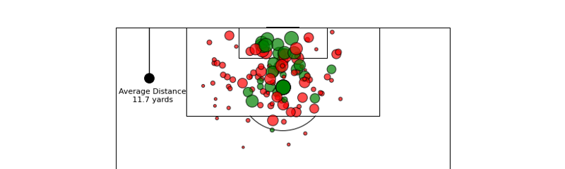

Layoffs are a recurring feature of modern economies, with ripple effects that extend beyond cost-cutting measures.
They impact:
Individuals: job loss, reduced income, uncertainty.
Companies: short-term financial relief but long-term innovation loss.
Economies: decreased consumer spending, higher unemployment, reduced tax revenues.
The 2022–23 wave of layoffs, especially in the tech sector, raised urgent questions:
How do layoffs affect employees, companies, and the broader economy?
What global and industry patterns can we observe?
Do layoffs improve corporate financial performance or create hidden costs?
How quickly do workers recover after being laid off?
This project explores these questions through historical, global, industry, and company-level analysis.


The research focuses on utilizing relational database principles to analyze the dataset and extract useful insights. To alter the data and retrieve valuable information, we employ DDL techniques.

Identify consumers who are most likely to stop using a service, examined churn data from the telecom sector. The primary goal is to create a prediction model that identifies consumers who are likely to depart the telecom firm or churn.

This project analyzes Erling Haaland’s record-breaking debut season with Manchester City in the Premier League (2022–23). Using match-level data from Understat and Python-based visualizations, it examines his goal distribution, shot profile, scoring efficiency, and assist patterns to uncover what makes him such a prolific striker. Beyond the numbers, the study adds a business and strategy lens — highlighting how Manchester City can maximize Haaland’s strengths, reduce over-reliance on key creators like Kevin De Bruyne, and shape future recruitment strategies to sustain both footballing success and commercial growth.
In this analysis, Spotify rock music trends were examined to understand the factors influencing track popularity. The study explores patterns in track duration, release year, and artist performance, identifying key insights using data visualizations in Tableau. By analyzing popularity trends over time, the correlation between track duration and success, artist impact, and seasonal release patterns, this project provides valuable insights for music industry professionals, streaming platforms, and data analysts. The findings can help optimize playlist curation, marketing strategies, and content recommendations, offering a data-driven approach to understanding rock music trends on Spotify.
An end-to-end Streamlit dashboard that ingests and cleans over 560,000 Amazon Fine Food reviews (handling timestamps, missing data, and duplicates), applies NLTK’s VADER for sentiment scoring (validated against 1–5 star ratings), and aggregates trends by month—filtering out low-volume noise to highlight significant sentiment spikes (e.g., +0.15 in Oct 2005) and dips (–0.15 in Feb 2006). Users can drill down by product, track custom keywords (like “fresh” or “delay”), receive automated alerts for large month-over-month changes, inspect top positive/negative review samples, and even run on-demand LDA topic modeling to uncover themes driving customer feedback. Built with Python, Pandas, Matplotlib, scikit-learn, and Streamlit, it’s deployed on Streamlit Cloud for a polished, interactive BI experience.